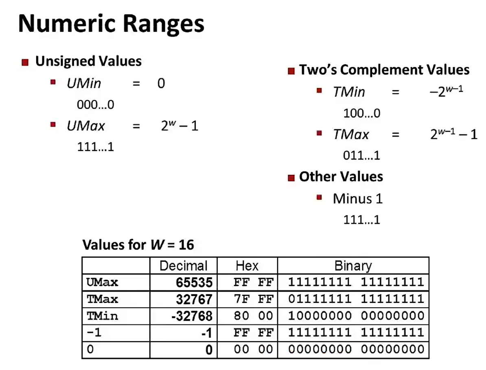
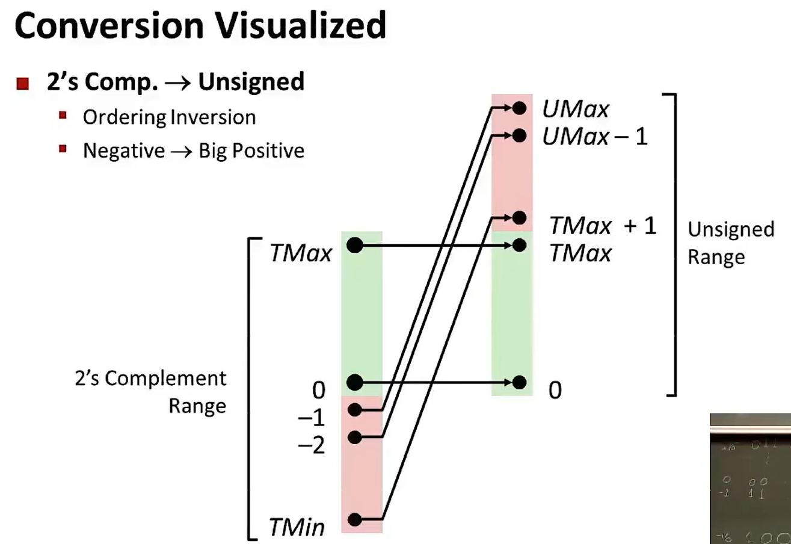
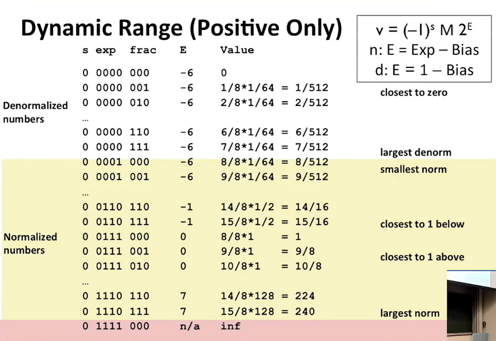
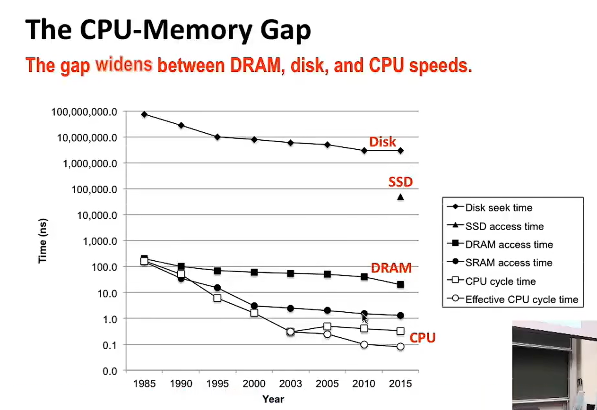
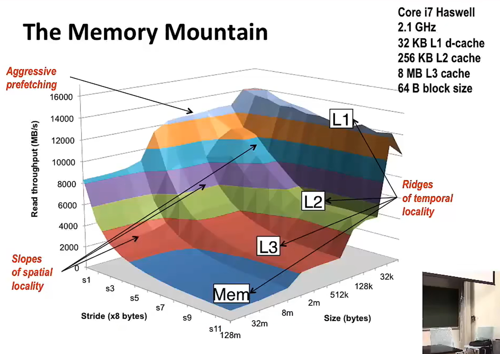

ryouの花哨编程基础
Shell
shell是啥
一般来说，Shell是指操作系统中提供访问内核所提供之服务的程序。Shell也用于泛指所有为用户提供操作界面的程序，也就是程序和用户交互的层面。因此与之相对的是内核（英语：Kernel），内核不提供和用户的交互功能。
Shell本身是一个用C语言编写的程序，它是用户使用Linux的桥梁。Shell既是一种命令语言，又是一种程序设计语言。
作为命令语言，它交互式地解释和执行用户输入的命令；作为程序设计语言，它定义了各种变量和参数，并提供了许多在高级语言中才具有的控制结构，包括循环和分支。
Shell有两种执行命令的方式：交互式（Interactive）和批处理（Batch）。
shell脚本解释器
Shell是一种脚本语言，那么，就必须有解释器来执行这些脚本。
常见的Shell解释器有bash、csh、ksh、zsh等。
bash是最常用的Shell解释器，它是GNU Project的自由软件，是Linux、Unix和Mac OS X的默认Shell。
深入了解计算机系统
int、unsigned、float、double...


位移：1个时钟周期；乘法：数个时钟周期；除法：30个时钟周期；
big endian、little endian：字节序，大端序是高位字节排放在内存低地址端，小端序是低位字节排放在内存低地址端。
小数：
汇编语言
算术指令：leaq、addq、subq、andq、orq... （q：quadword 四字）（sd:single double doubleword 单双字）(apd:add packed doubleword 加包双字)
寄存器：%rax、%rbx、%rcx、%rdx、%rsi、%rdi（数组基指针）、%rsp（栈指针）、%rbp(基指针)、%rip（指令指针）、%r8~%r15
寄存器：%xmm0~%xmm15(浮点数寄存器，128位)，%ymm0~%ymm15(浮点数寄存器，256位)，%zmm0~%zmm31(浮点数寄存器，512位)
条件码：%cf、%zf、%sf、%of
条件循环：（goto语句）loop:... goto loop，（汇编指令）.L2: ... j() .L2；j()为jump，()为条件
callq：调用函数，返回地址存入栈顶，返回地址指向下一条指令。
retq：返回函数，从栈顶弹出返回地址，并跳转到该地址。
univ：通用寻址模式，用于访问内存中的任意位置。
jmpq：无条件跳转。
数组、类、union：
canray：防止缓冲区溢出攻击。
gadget：可以被用来构造攻击的小片段。
gcc优化
O1：进行常规优化，编译速度较慢，代码量一般。
O2：进行高度优化，编译速度较慢，代码量较少。
O3：进行最高优化，编译速度较慢，代码量最少。
-O：等同于-O2。
向量化编程：将一个循环中的多个操作合并为一个向量操作，比如循环访问一个数组，可以将多个元素同时存入向量寄存器，然后一次性计算。
循环展开：将一个循环展开为多个循环。
分支预测：通过分析代码的执行路径，提前预测执行的分支，guess！
缓存优化：将数据存放在缓存中。
Latency Bound：延迟绑定，即指令的执行时间与指令的输入数据量成正比。
vec Throughput Bound：向量化指令的吞吐量, 即处理器的每秒能执行的指令数, 与向量长度成正比。
内存

ALU：算术逻辑单元，负责执行算术运算和逻辑运算。
SSD：Solid State Drive，固态硬盘。
rotating disks：旋转式磁盘。
DRAM：dynamic random-access memory，动态随机存取存储器
SRAM：static random-access memory，静态随机存取存储器
cache：高速缓存，位于CPU和内存之间，用于存储最近访问过的数据。
miss or hit：缓存命中或未命中，缓存命中时，直接从缓存中读取数据，未命中时，需要从内存中读取数据（100倍时钟周期），然后存入缓存，再次访问时，直接从缓存中读取数据。
cache memory：S*E*B
memory mountain：
链接
linkers最难调试，很难搞明白内部发生了什么：
gcc -Og test.cpp sum.cpp -lstdc++ -o test
默认：静态链接，但是会先分离编译为汇编文件，再链接。
静态链接：将目标文件中的代码和数据直接拷贝到可执行文件中，运行时不需要再进行链接。
动态链接：将目标文件中的代码和数据拷贝到内存，运行时再进行链接。
strong、weak、lazy：强（有初始化全局）、弱（无初始化全局）、延迟，静态链接时，强符号和弱符号的选择；动态链接时，只有强符号才会被加载。
-fno-common：当linkers遇到多个弱符号时，会报错，如果不加入该指令，则会选一个符号，并且有可能覆盖后面的变量；
所以要注意全局变量的初始化
Vim
插入
i：进入编辑模式，输入字符；
a：进入编辑模式，在光标后插入字符；
o：在当前行下方打开新行；
O：在当前行上方打开新行；
移动
hjkl：左下上右键，光标移动;
（number）+web：下个单词，单词end，单词begin；
删除
输入
number+i+...+esc：输入内容重复number次；
报错
典型
segmentation fault(分段错误)：程序试图访问非法的内存地址。
stack overflow(栈溢出)：程序调用函数时，栈的空间不足，导致溢出。
c++标准库异常类
std::bad_alloc：内存分配失败。
std::bad_cast：类型转换失败。
std::runtime_error：运行时错误。
std::overflow_error：数值运算结果溢出。
std::underflow_error：数值运算结果下溢出。
std::range_error：数学函数的结果超出定义域。
std::logic_error：逻辑错误。
std::domain_error：数学函数的参数不在定义域。
std::invalid_argument：函数的参数无效。
std::out_of_range：访问超出范围的元素。
std::length_error：容器的长度超过最大值。
正则表达式
基础
^：匹配字符串的开始；
$：匹配字符串的结束；
.*：匹配任意字符（包括换行符）；
+：匹配前面的字符1次或多次；
?：匹配前面的字符0次或1次；
[]：匹配括号中的字符；
{}：匹配前面的字符出现次数；
|()：匹配括号中的字符，或；
^：匹配字符串的开始；
$：匹配字符串的结束；
特殊
\d：匹配任意数字；
\D：匹配任意非数字；
\w：匹配任意字母、数字、下划线；
\W：匹配任意非字母、数字、下划线；
\s：匹配任意空白字符；
\S：匹配任意非空白字符；
\b：匹配单词边界；
\B：匹配非单词边界；
\n：匹配换行符；
\t：匹配制表符；
\r：匹配回车符；
\f：匹配换页符；
\a：匹配响铃符；
\e：匹配 escape 字符；
示例
phone_num：(\\()?(\\d{3})(\\))?([-. ])?(\\d{3})([-. ]?)(\\d{4})
^hello：匹配以hello开头的字符串；
world$：匹配以world结尾的字符串；
hello.*world：匹配hello后面任意字符，world前面任意字符的字符串；
hello+world：匹配hello后面至少一个字符，world前面任意字符的字符串；
hello?world：匹配hello后面0个或1个字符，world前面任意字符的字符串；
[a-z]：匹配任意小写字母；
[A-Z]：匹配任意大写字母；
[0-9]：匹配任意数字；
[^0-9]：匹配任意非数字；
hello\sworld：匹配hello后面至少一个空白字符，world前面任意字符的字符串；
hello\Sworld：匹配hello后面至少一个非空白字符，world前面任意字符的字符串；
hello\bworld：匹配hello后面和world前面都是单词边界的字符串；
hello\Bworld：匹配hello后面和world前面都不是单词边界的字符串；
C++
字符串
substr方法：string new_str = s.substr(pos, len)，拷贝从pos开始的len个字符到一个新的字符串。
replace方法：s = s.replace (size_t pos, size_t len, const string& str); 可结合s.find()方法，到达替换目标字符串。
STL容器
map：key-value对的集合，通过key查找value。
unordered_map：key-value对的集合，通过key查找value，不会根据key的大小进行排序。
set、map：插入、查找、删除的时间复杂度为O(logn);
unordered_set、unordered_map：插入、查找、删除的时间复杂度为O(1);
vector的小知识
emplace_back方法：在vector尾部直接创建元素，省去了push_back创建临时对象以及其移动或拷贝的步骤。
pop_back：与push_back相对应，删除vector尾部元素。
resize：resize(size_t new_size, const T& val)，调整vector的大小
assign：assign(size_t count, const T& val)，将vector所有元素赋值为val。
&的用法
取地址：int *p = &a，p指向a的地址。
引用（别名）：int &r = a，r是a的别名，可以直接用r来代替a。作为函数的参数，处理大块数据的传递（有同样的作用的便是指针）；
常引用：const int &cr = a，cr是a的常引用，通过修改a的值来修改cr，提高安全性，注意：引用作为函数的参数时尽量使用常引用；
作为函数的返回：int &Func(){}，在内存中不产生返回值的临时变量，但是不能返回函数局部变量